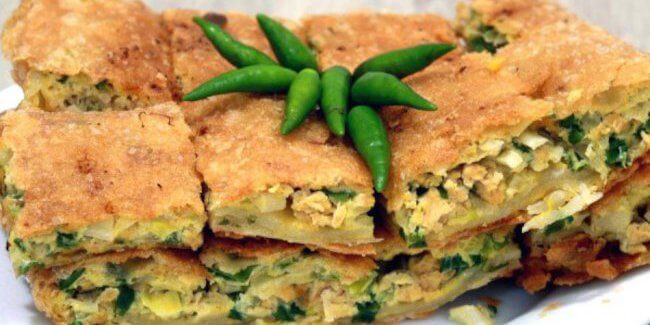
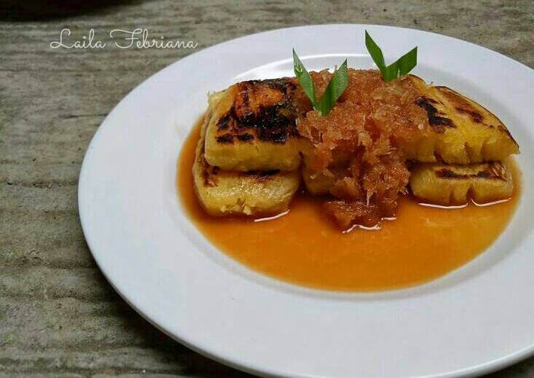

Jajanan Indonesia

Cilok
Cilok adalah sebuah makanan khas Jawa Barat yang terbuat dari tapioka yang kenyal dengan tambahan bumbu pelengkap seperti sambal kacang, kecap, dan saus. Cilok bentuknya bulat-bulat seperti bakso, hanya saja berbeda bahan dasarnya. Terdapat telur atau daging cincang di dalamnya, karena terbuat dari bahan dasar tapioka maka cilok terasa kenyal saat dikonsumsi.
Sempol
Jajanan berbahan dasar tepung dengan ayam atau perasa ayam yang dicelup dengan telur lalu digoreng ini telah menjadi favorit warga malang bahkan saat ini kuliner khas malang ini sudah ada di beberapa kota lainnya , seperti di Banyuwangi.
Gethuk
Gethuk adalah makanan ringan yang terbuat dari ketela pohon atau singkong . Gethuk merupakan makanan yang mudah ditemukan di jawa tengah dan jawa timur.Untuk penghidangan biasanya ditaburi parutan buah kelapa .
Martabak Manis
Martabak manis biasanya disebut juga terang bulan , panganan sejenis kue dadar yang biasanya di jajakan di pinggir jalan di seluruh Indonesia.

Bakpia
Bakpia adalah makanan yang terbuat dari campuran kacang hijau dengan gula yang dibungkus dengan tepung, lalu dipanggang . Istilah bakpia sendiri adalah istilah dari dialekHokian yaitu dari kata "Bak" yang berarti daging babi dan "pia" yang berarti kue .
Mochi
Mochi adalah kue yang terbuat dari beras ketan, ditumbuk sehingga lembut dan lengket, kemudian dibentuk menjadi bulat. Di Jepang kue ini sering di buat dan dimakan pada saat perayaan tradisional. Mochitsuki atau perayaan tahun baru jepang.
Rujak Buah
Rujak buah adalah makanan tradisional yang biasanya terbuat dari campuran berbagai macam sayuran atau buah dan dibubuhi bumbu kacang atau kuah . Rujak mudah ditemukan di Indonesia , banyak yang menjual secara keliling di pinggir jalan.

Martabak Telor
Martabak berarti "Terlipat" merupakan sajian yang biasanya ditemukan di Arab saudi . Di Indonesia ada dua jenis martabak yaitu martabak asin / telur yang terbuat dari campuran telur dan daging kemudian digoreng , biasanya ada di pinggir jalan dan harganya pun terjangkau.

Colenak
Colenak atau dikenal juga dengan tape bakar adalah nama yang diberikan pada kudapan yang dibuat dari singkong yang dibakar di santap dengan di cocol kan pada gula jawa cair yang dicampur dengan serutan kelapa. Kudapan ini berasal dari bandung .
Serabi
Merupakan jajanan tradisional yang berasal dari Indonesia ada dua jenis serabi , yaitu serabi manis yang menggunakan kinca (gula cair)dan serabi asin dengan tanpa taburan oncom yang telah dibumbui diatasnya . Di Bandung serabi biasanya di jajakan di pagi hari dan dimasak menggunakan tungku sehingga menghasilkan rasa yang khas.
Terimakasih telah berkunjung :) Jika ada saran dan kritik silahkan tulis dibawah